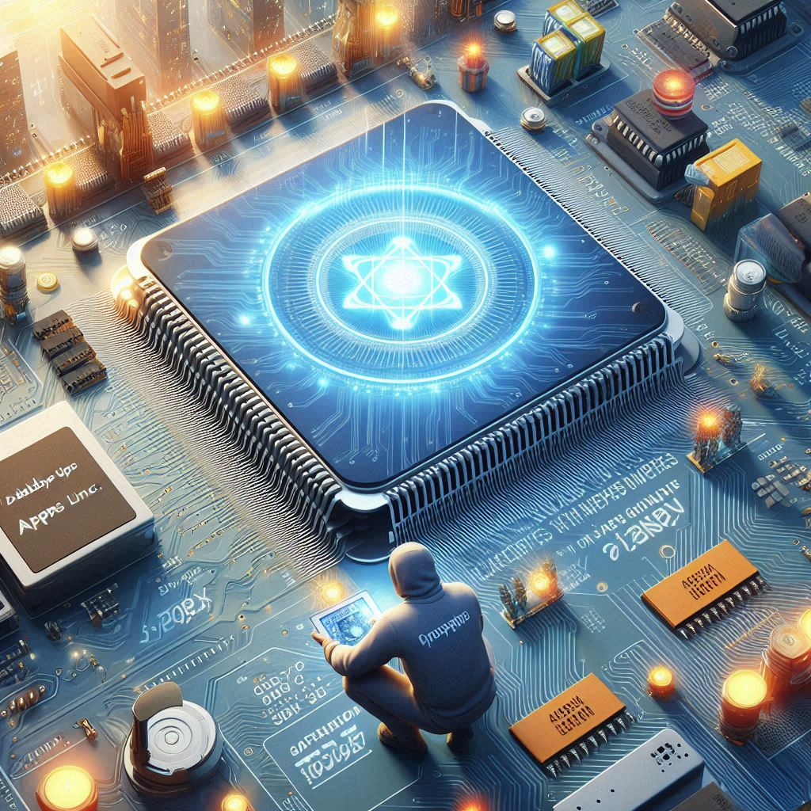
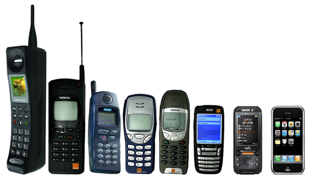
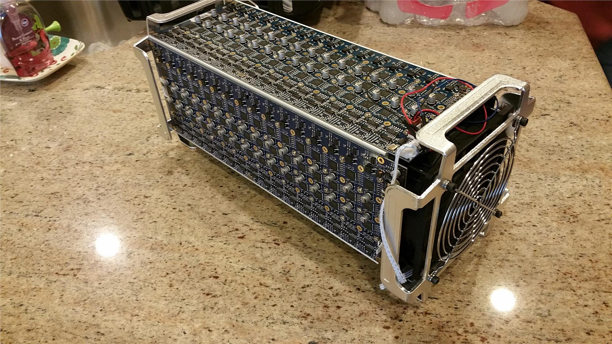
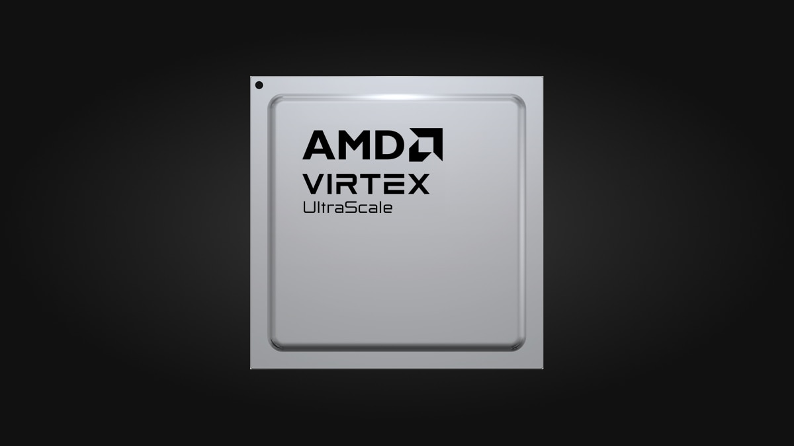
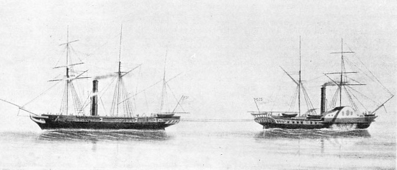
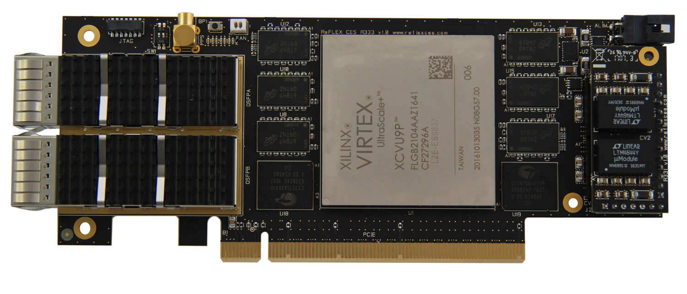

Data centers often use one hundred times as much power as other businesses according to the Wall Street Journal, and this percentage is increasing year by year.
That is more than the total amount of electricity consumed by these major global cities:
| City | Annual Consumption (TWh) | Percentage of Global Production (%) | Image |
|---|---|---|---|
| New York City | 53.65 | 0.18 | |
| Los Angeles | 46.3 | 0.15 | |
| Chicago | 40 | 0.13 | |
| Houston | 70 | 0.23 | |
| London | 40 | 0.13 | |
| Paris | 68.2 | 0.23 | |
| Total | 318.15 | 1.06 |
As a consequence, data center operators like to locate their data centers close to reliable supplies of cheap electricity.
For example, Gmail is located near the Boneville Dam in The Cascades, Oregon.
Global electricity production currently amounts to $2.1 trillion annually â equivalent to the GDP of Italy.
Data centers do a lot of database lookups. Every company has a database and every company spends lots of time and money looking stuff up in their database quickly for their demanding customers.
If we could make database lookups more efficient, data centers would save a lot of money on their electricity bills â perhaps $100 million per year.
Appa Apps Ltd Inc. is prototyping a specialized Silicon chip to perform database lookups using 10 times less electricity while doing the look up 10 times faster than generic computers can.

Today, everyone has a mobile phone with a graphics processing unit (GPU) implemented in Silicon rather than software because the original software-only versions were too slow while the mobile phone was the size of a brick. Every personal computer has a GPU now-a-days for the same reason.

Bitcoin mining used to be done in just software. At one time you could easily mine a few bitcoins every day with a generic notebook computer. Now, you need to use a data center full of specialized Bitcoin miners that do most of that processing in Silicon rather than in software.

Implementing database software effectively in Silicon will help data center operators be more competitive by reducing their cost per database lookup while speeding up such look-ups at the same time.
Appa Apps has just succeeded in synthesizing a Verilog version of the well known database algorithm normally written in the C programming language, ready for placement on an field programmable gate array (FPGA).

We are going to use a field programmable gate array mounted on a card to compare the performance of our specialized implementation of the database algorithm with the performance of a generic computer running the same algorithm in conventional code.

If our specialized implementation can do database lookups significantly faster using less power than the generic implementation, then we are going to send data center operators copies of the field programmable gate array on a card so that they can plug it in and see for themselves that they are currently wasting money, needlessly, on their electricity bills unless they use our design.

We need to raise $1M to buy hardware to demonstrate our technology, hardware engineers to implement our technology on an actual field programmable gate array connected to the real world via Ethernet, and sales and marketing personnel to present our findings to the major data center operators with the goal of getting letters of intent from them indicating that they are interested in buying our chips.

If they are willing to sign letters of intent to buy such chips when they become available, we will use those letters to drive a large Series A funding round and get into the business of saving the planet by reducing the electricity consumed by each database while making a lot of money.
Just me and ChatGpt
A class C corporation registered in Austin, Texas.
ChatGPT is very useful as it does all the boring low-level coding letting me concentrate on the problem of what, exactly, to code.
None at all. Just creating the prototype has occupied me fully for the last two years with no space for anything else.
philiprbrenan@gmail.com
I will be happy to help you with your project, gratis, if you will try to help me with mine.